여러분, 이 영상부터 한번 볼게요. 요즘 미국 물류현장에서는 사람처럼 생긴 휴머노이드 로봇이 실제 일을 하기 시작했습니다. 예전에는 영화에서나 보던 장면인데, 이제는 정말 현실이 되고 있어요.
01/ 26
CHINA
중국 물류 휴머노이드
기술의 속도는 생각보다 훨씬 빠릅니다.
이번에는 중국입니다. 중국도 정말 빠르게 휴머노이드 로봇을 현장에 넣고 있어요. 미국이든 중국이든 지금 세계 곳곳에서 ‘로봇이 사람의 일을 어디까지 할 수 있을까?’를 두고 엄청난 경쟁이 벌어지고 있습니다.
02/ 26
KOREA
한국 물류 휴머노이드
그리고 이 기술은 이제 한국의 물류현장으로 들어오고 있습니다.
그리고 한국도 가만히 있지 않죠. 우리나라에서도 이런 로봇을 실제 산업현장에 쓰기 위한 개발이 빠르게 진행되고 있습니다. 그런데 제가 왜 여러분에게 갑자기 로봇 영상을 보여주고 있을까요?
03/ 26
NOW · v10.1
🤖
저는 요즘 이런 일을 합니다.
Physical AI × Humanoid × Logistics
한국에서 휴머노이드 로봇이 실제 물류현장에서 일하도록 만드는 일
제가 요즘 하는 일이 바로 이런 일입니다. 휴머노이드 로봇과 AI가 실제 물류현장에서 사람과 함께 일할 수 있도록 만드는 일을 하고 있어요. 그런데 오늘은 제가 무슨 일을 하는지 자랑하려고 온 건 아닙니다.
04/ 26
BUT…
중학생 때의 나는 이런 일을 하게 될 줄 몰랐습니다.
오늘은 ‘성공한 이야기’보다 내가 어떻게 계속 바뀌어 왔는지 이야기해보려 합니다.
왜냐하면 중학생 때의 저는 제가 이런 일을 하게 될 거라고 정말 상상도 못했거든요. 지금 사진 속 저와 중학생 때의 저는 꽤 다른 사람입니다. 오늘은 제가 어떻게 여기까지 오게 됐는지, 그 과정에서 무엇이 바뀌었는지를 이야기해보려고 합니다.
05/ 26
MY VERSION HISTORY
나의 VERSION HISTORY
BODY × MIND × SPIRIT
💪 BODY몸 · 체력 · 신체적 자신감
🧠 MIND‘내가 해내야 한다’는 마음 · 자기 의지
🙏 SPIRIT하나님을 알고 · 믿고 · 맡기는 정도
v1.0v2.xv3.0v4.0v5.0v6.xv7.xv8.xv9.x
BODY MIND SPIRIT
제 인생을 컴퓨터 프로그램처럼 버전 히스토리로 한번 그려봤어요. BODY는 몸, MIND는 ‘내 힘으로 내가 해내야 한다’는 마음, SPIRIT은 하나님을 알고 의지하는 정도라고 보면 됩니다. 재미있는 건 이 세 가지가 같이 올라가지 않았다는 거예요. 몸과 능력이 좋아질 때 마음은 오히려 교만해지기도 했고, 삶이 무너질 때 하나님을 더 깊이 만나기도 했습니다.
06/ 26
v1.0 사춘기 전 · 초등 → 중2
조용한 아이에서 지기 싫은 아이로
초등학생 → 중학생
초등학생 때
울보 · 부끄러움 많음 · 몸 약함 운동은 거의 꼴찌. 공부는 좀 잘했지만 늘 2등쯤.
중학생이 되면서
가장 친한 친구는 전교 1등. 그 친구를 이기고 싶어졌고 과학고를 목표로 공부하기 시작했습니다.
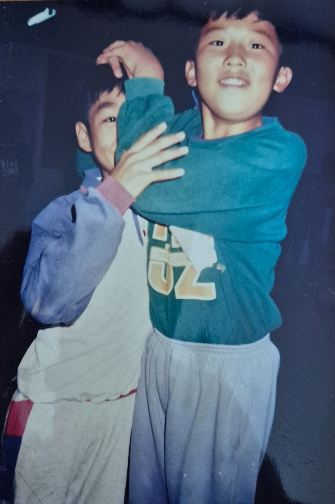
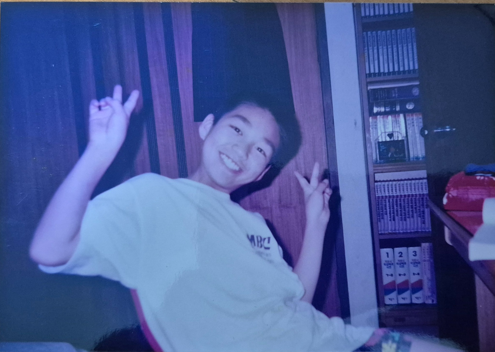
초등학교 때 저는 조용하고 부끄러움도 많고 잘 우는 아이였어요. 키도 작고 몸도 약했고, 축구는 정말 ‘개발’이었고 달리기는 거의 늘 꼴찌였습니다. 공부는 좀 해서 선생님께 인정받는 건 좋아했는데, 중학생이 되면서 전교 1등이던 가장 친한 친구를 갑자기 이기고 싶어졌어요. 지금 생각하면 자격지심이 꽤 컸던 것 같습니다. 수학과 과학은 자신 있었기 때문에 과학고를 목표로 열심히 공부하기 시작했어요.
07/ 26
v2.0 사춘기 · 첫 번째 꿈 좌절
그런데, 게임의 룰이 바뀌었다.
중3 과학고 입시제도 변경
시험 → 내신 + 학교장 추천 추천을 받지 못했고, 첫 번째 큰 목표가 사라졌습니다.
💥
그런데 중3 때 게임의 룰이 갑자기 바뀌었습니다. 과학고를 시험으로 뽑던 방식이 내신과 학교장 추천 중심으로 바뀐 거예요. 저는 전체 1등이 아니어서 추천을 받을 수 없었습니다. 지금 생각하면 ‘과학고 하나 못 간 게 뭐 그렇게 큰일이야?’ 싶지만, 그때의 저에게는 그게 제 인생의 전부처럼 느껴졌어요.
08/ 26
v2.1 사춘기 · 방황
방황
중3 → 고2
겉으로는 조금 더 ‘강한 사람’이 되어갔지만
공부는 2년 동안 거의 하지 않았고 고2에는 전교 거의 꼴찌가 되었습니다.
그때부터 저는 꽤 오래 방황했습니다. 중3부터 고2까지 공부를 거의 놓았고, 수업시간에 음악을 듣거나 만화책을 보기도 했어요. 키가 크고 운동도 시작하고 노래도 좋아하면서 친구들 사이에서 좀 인기 있는 아이가 됐는데, 사실 속으로는 약해 보이기 싫어서 일부러 더 세고 외향적인 사람처럼 행동했던 것 같아요. 고2 때는 성적이 학교 거의 바닥까지 내려갔습니다.
09/ 26
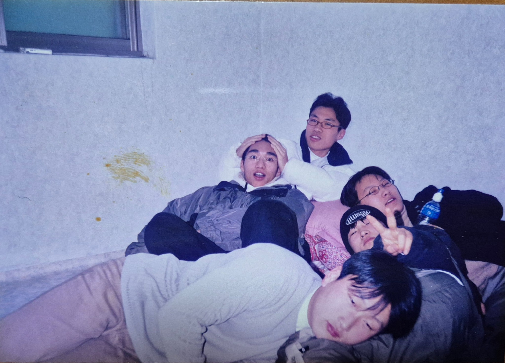
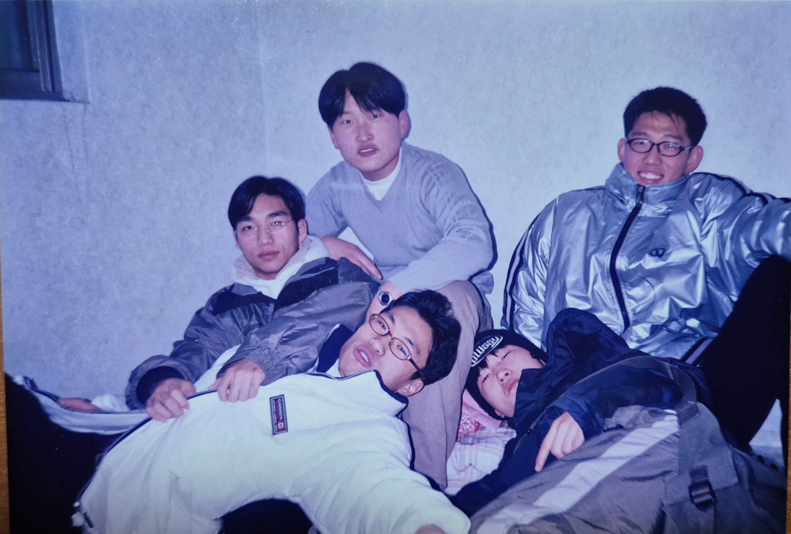
v2.2 돌아오다
나를 돌아오게 한 것은 ‘사랑’이었다.
아버지의 눈물 · 문제학생 캠프 · 부모님께 쓴 편지
나를 바꾼 건 혼나는 것이 아니라 ‘내가 사랑받고 있다’는 것을 깨달은 순간이었습니다.
❤️
그런 저를 다시 돌아오게 만든 건 혼나는 일이 아니었습니다. 어느 날 아버지가 저 때문에 우시는 모습을 봤어요. 또 학교에서 보낸 캠프에서 정말 위험한 길로 들어가고 있는 또래들을 보면서 ‘나도 계속 이대로 가면 안 되겠다’는 생각이 들었습니다. 부모님께 편지를 쓰다가 많이 울었고, 그때 처음 ‘아, 나는 정말 사랑받고 있는 사람이구나’를 깊이 느꼈어요. 저를 바꾼 건 비난보다 사랑이었습니다.
10/ 26
v3.0 다시 시작
다시 시작
고3 · 재수
2년의 공백을 한 번에 메우기는 어려웠습니다.
재수 끝에 공대에 합격했습니다.
그래서 고3 때 다시 시작했습니다. 그런데 2년 가까이 공부를 놓았으니 1년 만에 다 따라잡기는 쉽지 않았어요. 결국 재수를 했고, 내신이 너무 안 좋아서 지원할 수 있는 학교도 제한적이었습니다. 그래도 수능으로 한양대 기계공학과에 들어갔습니다. 중요한 건 대학 이름보다, 제가 다시 시작해봤다는 거였어요.
11/ 26
v4.0 군대
내가 알던 내가 전부가 아니었다
군대
“나는 운동 못하는 사람”이라는 정의가 깨졌습니다.
달리기와 축구를 꽤 잘한다는 걸 발견했고, 찬양하는 중에 이유 없이 눈물이 났습니다. 지금 돌아보면, 그때부터 하나님께서 나를 돌보시며 회복시켜 주셨던 것 같습니다. 내 안에 오래 있던 자격지심도 조금씩 회복되기 시작했습니다.
군대에서도 제 생각을 깨뜨리는 일이 있었습니다. 이등병 때 행군하다가 제가 쓰러졌어요. 너무 창피하고 싫어서 그 뒤로 운동을 시작했는데, 해보니까 제가 생각보다 달리기도 잘하고 축구도 꽤 잘하는 거예요. 거의 20년 동안 ‘나는 운동 못하는 사람’이라고 믿었는데, 그게 사실이 아니었던 거죠. 그리고 휴가증을 받으려고 찬양대회에 나갔다가 찬양 중에 이유 없이 눈물이 난 적도 있습니다. 그때는 하나님을 잘 몰랐지만, 지금 돌아보면 제 마음을 조금씩 만지고 계셨던 것 같아요.
12/ 26
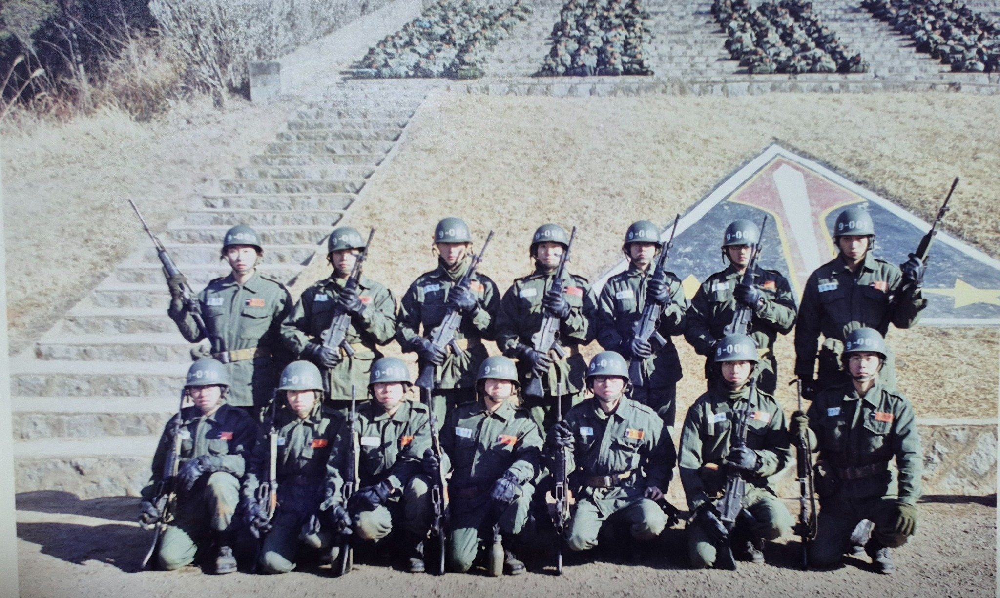
v5.0 대학교
하면 된다?
제대 후 대학
열심히 노력하며 인정도 받았습니다.
하지만 자신감은 교만이 되었고, 노력하지 않는 사람을 쉽게 무시했습니다.
🤖📚
제대하고 나서는 자신감이 엄청 생겼습니다. ‘어? 나도 하면 되네?’ 하면서 공부를 정말 열심히 했고, 성적도 좋아지고 교수님께 인정도 받았어요. 그런데 문제는 제가 잘될수록 교만해졌다는 겁니다. 노력하지 않는 사람을 쉽게 판단하고 무시하기도 했어요. 나중에 그때 제가 쓴 글과 말을 다시 보고 정말 부끄러웠습니다. 능력이 커지는 것과 사람이 성숙해지는 건 같은 일이 아니더라고요.
13/ 26
v6.0 대학원
나보다 훨씬 잘하는데… 왜 저렇게 겸손하지?
처음 만난 예수님 제자, 대학원 동기
똑똑하고 열심히 하는데도 겸손했고, 모르면 묻고 감사할 줄 알았습니다. 그리고 하나님을 정말 잘 믿는 친구였습니다.
✝️
대학원에서 저보다 훨씬 공부를 잘하는 친구를 만났습니다. 그런데 그 친구를 보며 더 놀란 건 실력이 아니라 태도였어요. 모르면 모른다고 묻고, 누가 알려주면 진심으로 감사하고, 자기보다 못한다고 사람을 무시하지 않았습니다. 그리고 예수님을 정말 진지하게 믿는 친구였어요. 저는 그 친구를 보면서 처음으로 ‘저 사람보다 잘하고 싶다’가 아니라 ‘나도 저런 사람이 되고 싶다’는 생각을 했습니다.
14/ 26
v6.1 교회 · 사람의 사랑
“나도 이런 사람이 되고 싶다.”
교회에서 만난 사람들의 사랑
15/ 26
성경은 아직 잘 모르겠는데…
찬양과 ‘하나님이 너를 사랑하신다’는 말씀
말씀은 잘 이해하지 못했지만 그 말이 자꾸 마음에 들어왔습니다.
“너희가 서로 사랑하면 이로써 모든 사람이 너희가 내 제자인 줄 알리라.”
요한복음 13:35
그 친구가 저를 교회에 계속 데려갔습니다. 처음에는 사람들이 너무 잘해주니까 ‘왜 이렇게까지 하지? 뭔가 목적이 있나?’ 싶었어요. 그런데 잘 알지도 못하는 형이 제 안부를 묻고, 저를 위해 기도하고, 또 다음에 만나서 계속 챙겨주는 걸 보면서 그게 진심이라는 걸 알게 됐습니다. 성경은 아직 잘 모르겠고 설교도 거의 이해가 안 됐는데, 찬양과 ‘하나님이 너를 사랑하신다’는 말은 자꾸 제 마음에 들어왔어요.
v6.2 유학과 첫 순종
처음으로 성공의 공식을 바꿔보다.
미국 유학 준비 vs 제자훈련
‘내 인생을 가장 잘되게 하는 건 스펙일까, 하나님께 붙어 있는 삶일까?’
네가 만일 내 앞에서 행하기를…역대하 7:17–18 중
💡
석사를 마치고 저는 미국 유학을 준비하려고 했습니다. 좋은 스펙을 쌓고 교수가 되는 게 제 성공 공식이었거든요. 그런데 친구가 ‘그 결정도 하나님께 한번 물어보면 어때?’라고 했습니다. 그래서 하루를 정해 교회에 혼자 앉아 성경을 읽고 기도했어요. 그때 처음으로 ‘내 인생을 견고하게 만드는 게 스펙만은 아닐 수도 있겠구나. 하나님께 붙어 있는 게 더 중요할 수도 있겠구나’라는 생각이 들었습니다.
16/ 26
v6.3 제자훈련 선택
“그래. 한번 순종해보자.”
유학 준비를 내려놓고 제자훈련 선택
“하나님, 제가 제 계획을 내려놓았으니 제 인생은 하나님이 책임지세요.”
✊
그래서 처음으로 제 계획을 조금 내려놓아 보기로 했습니다. 미국 유학 준비 대신 교회 제자훈련을 선택했어요. 그리고 꽤 당돌하게 기도했습니다. ‘하나님, 제가 제 계획을 내려놓고 하나님께 순종해보겠습니다. 그러니 제 인생은 하나님이 책임져 주세요.’ 지금 생각하면 정말 겁 없는 기도였죠.
17/ 26
v6.4 제자훈련 중도 포기
그리고… 제자훈련은 중도 포기
그래도 남은 것이 있었다
중간에 그만뒀다고 그 시간이 사라지는 건 아니었습니다.
하나님·예수님·성경이 진리라는 믿음은 생겼지만 아직 하나님을 인격적으로 만나지는 못했습니다.
😂
그런데 반전이 있습니다. 제자훈련을 끝까지 못 했어요. 너무 힘들어서 중간에 포기했습니다. 그래도 그 몇 달이 헛된 건 아니었어요. 성경을 많이 읽고, 예수님과 복음에 대해 진지하게 고민하면서 ‘하나님이 계시고, 예수님과 성경이 진리다’라는 믿음은 생겼습니다. 다만 아직 하나님을 ‘인격적으로 만났다’고 말할 정도는 아니었어요.
18/ 26
v7.0 아내를 만나다
결혼 ❤️
소개팅에서 만난 아내
하나님을 닮은 사람에게 또 끌렸습니다.
첫 만남부터 북한 선교의 비전을 이야기했는데, 이상하게 그 모습이 너무 좋았습니다.
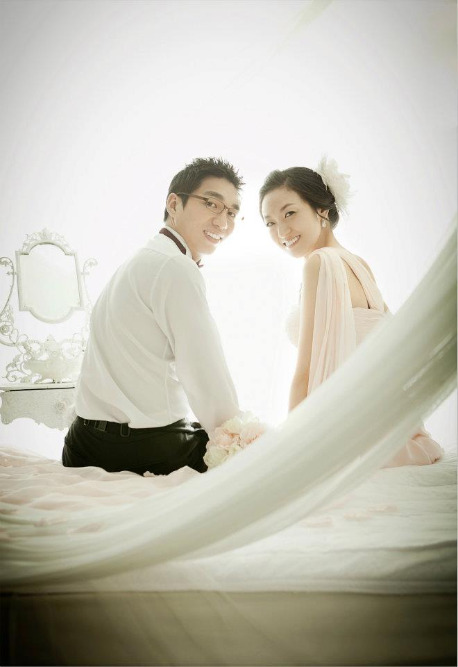
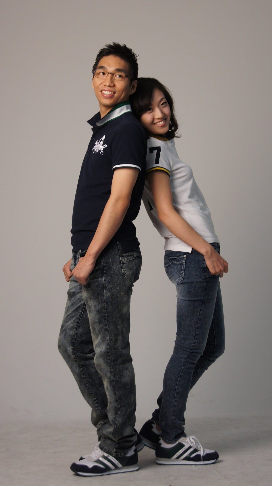
그 무렵 지금의 아내를 소개팅으로 만났습니다. 저는 첫 만남부터 마음에 들어서 결혼하고 싶었는데, 아내는 다시 안 만날 줄 알고 자기 꿈 이야기를 마음껏 했대요. 북한을 섬기고 싶다는 선교 이야기를 하는데 저는 그게 이상하게 너무 좋았습니다. 지금 돌아보면 저는 하나님을 아직 잘 알지는 못했지만, 하나님을 닮아가려는 사람에게 계속 마음이 끌렸던 것 같아요.
19/ 26
v7.1 결혼 · 독일 출국
결혼 → 바로 독일 DE ✈️
2011.8.30
부모님의 반대를 넘어 결혼하고 뮌헨으로 출국. 오늘이 정확히 출국 15주년입니다.
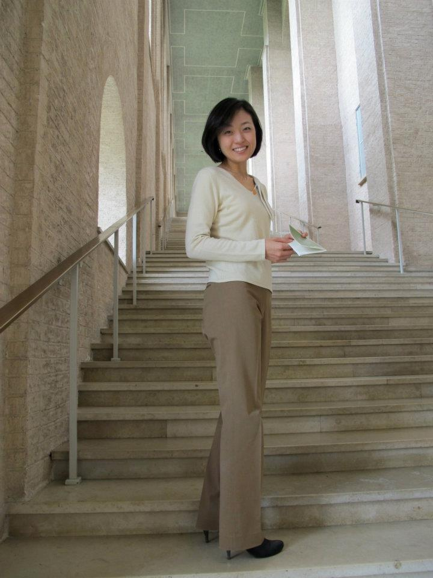
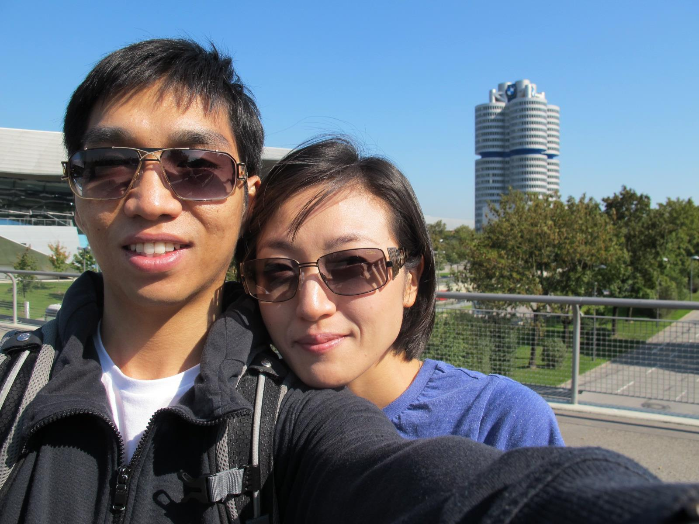
양가 부모님은 신앙과 문화 차이 때문에 결혼을 많이 반대하셨습니다. 그런데 저희 둘 다 독일 뮌헨에 합격했고 출국 날짜까지 잡혀 있었어요. 그래서 거의 ‘결혼을 시켜주시든 말든 저희는 같이 독일 갑니다’ 수준으로 밀어붙였습니다. 결국 결혼했고, 2011년 8월 30일 바로 독일로 떠났습니다. 그리고 오늘이 정확히 그날로부터 15년 되는 날입니다.
20/ 26
v7.2 독일 생활
😫 😵💫 🌧️ 🫠독일 — 계획과 현실은 달랐다.
1년 후부터 고난 시작
두 유학생 + 두 아이 + 돈 없음 + 공부 + 육아
내가 맡기지 못하던 영역을 하나씩 하나님께 가져가기 시작했습니다.
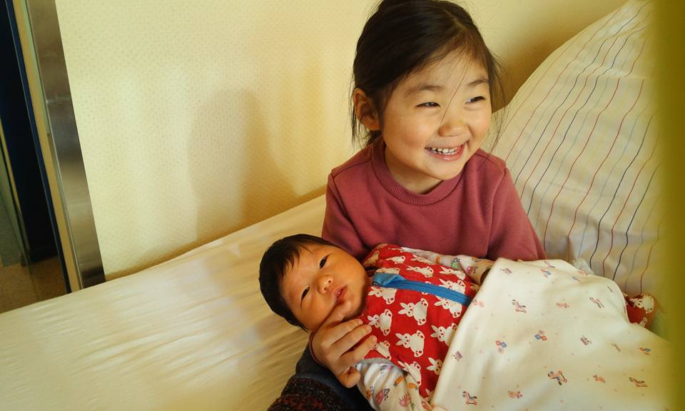
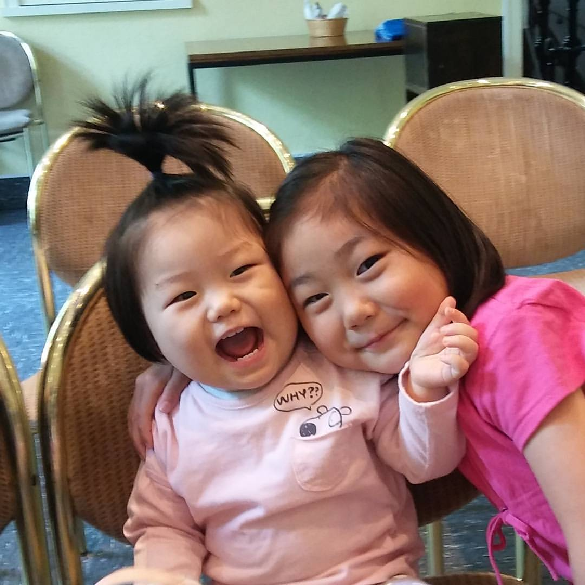
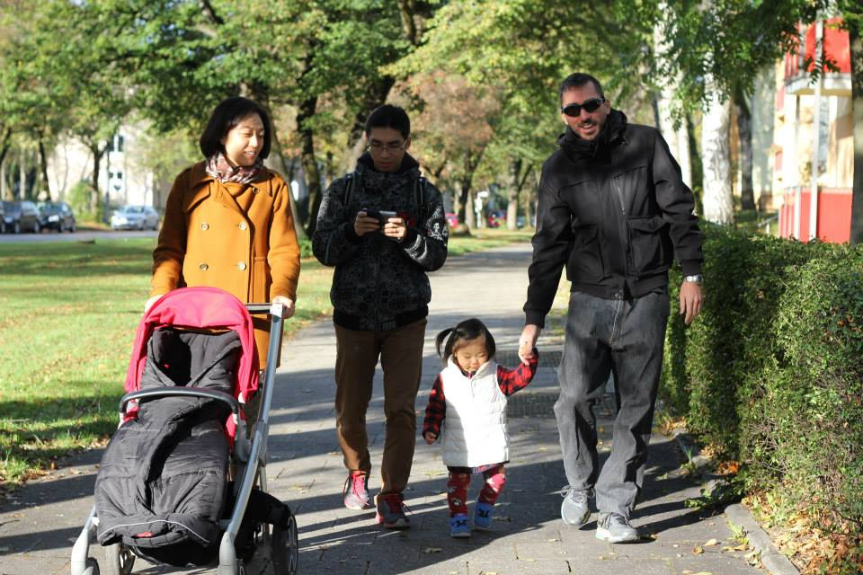
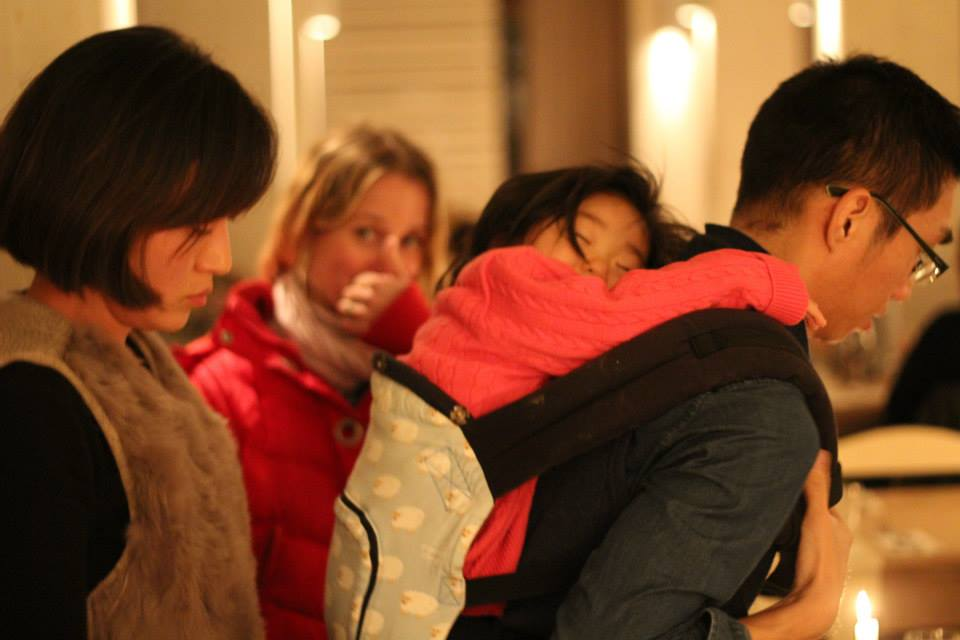
독일 생활은 처음 생각했던 것과 완전히 달랐습니다. 저희 둘 다 학생인데 아이 둘을 키워야 했고, 돈도 부족하고 공부도 해야 했어요. 계획대로 되는 게 거의 없었습니다. 그런데 바로 그때부터 하나님이 제 삶의 아주 현실적인 부분들을 하나씩 만지기 시작하셨어요. 저는 하나님께 기도하는 사람이라고 생각했지만, 사실 몸, 돈, 기술 같은 건 여전히 제가 해결해야 하는 영역이라고 생각하고 있었습니다.
21/ 26
v7.3 기도를 배우다
하나님, 이런 것도 기도해도 돼요?
몸 · 돈 · 기술
🏥
몸
급성 허리디스크
💰
돈
먹을 돈도 없던 때
💻
기술
고장 난 컴퓨터
아무 것도 염려하지 말고 다만 모든 일에 기도와 간구로…빌립보서 4:6
예를 들어 독일에 가자마자 허리디스크가 심하게 와서 일어나지도 못했어요. 아내가 기도하자는데 저는 ‘기도한다고 허리가 낫나?’ 하고 버텼습니다. 돈이 없어 굶을 때도 ‘하나님께 돈 달라고 왜 기도해?’ 했고, 중요한 순간 컴퓨터가 고장 났을 때도 기술자인 제가 끝까지 해결하려 했어요. 그런데 하나씩 내려놓고 기도하면서 저는 정말 예상하지 못한 도움과 회복을 경험했습니다. 그때 배운 게 하나 있어요. 하나님께 가져가면 안 되는 문제는 없다는 것이었습니다.
22/ 26
v8.0 Bonn · 하나님을 만나다
내가 갈 길도 맡기다
나는 가기 싫었던 BONN. 하지만 이번에는 ‘내가 갈 길’을 하나님께 맡겼고, 그곳에서 두 가지를 만났습니다.
내가 앞으로 무엇을 할 것인가
ROBOTICS AI
🤖 + 🧠
나는 누구의 사람인가
ISAIAH 43:1
“너는 두려워하지 말라 내가 너를 구속하였고
내가 너를 지명하여 불렀나니 너는 내 것이라.”
그리고 어느 토요일 아침 기도회… 내가 진정으로 주님의 것이라 고백했을 때 하나님을 드디어 인격적으로 만났습니다.
그러다 제가 정말 가기 싫었던 도시, BONN으로 가게 됐습니다. 그런데 이번에는 ‘내가 갈 길’까지 하나님께 맡겨보기로 했어요. 그리고 그곳에서 두 가지를 만났습니다. 하나는 지금까지 제 일의 기반이 된 ROBOTICS AI였고, 다른 하나는 ‘나는 누구의 사람인가’라는 질문이었습니다. 어느 토요일 아침 기도회에서 이사야 43장 1절, ‘내가 너를 지명하여 불렀나니 너는 내 것이라’는 말씀이 제 마음에 깊이 들어왔어요. 그때 제가 진심으로 ‘저는 주님의 것입니다’라고 고백하면서 하나님을 처음 인격적으로 만났다고 느꼈습니다.
23/ 26
v8.1 인도하심에 순종하다
하나님의 계획
BONN 🇩🇪가기 싫었지만 순종
→
Pick-it 🇧🇪좋아하는 로봇 일을 만남
→
한국 🇰🇷원하지 않았지만 보내신 길
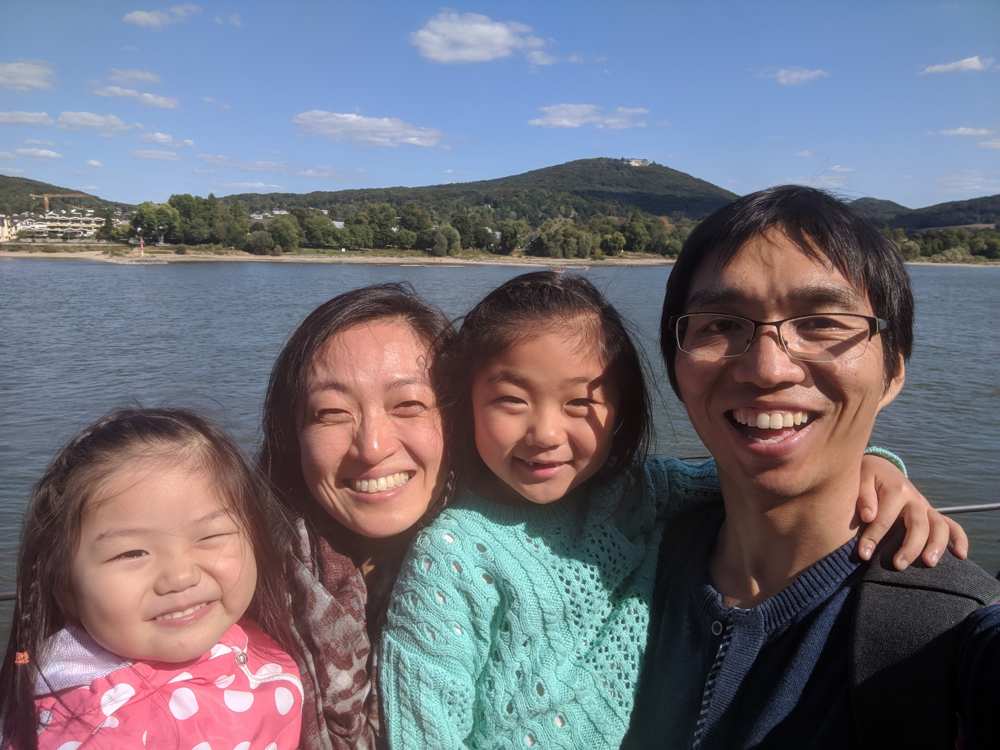
2018년
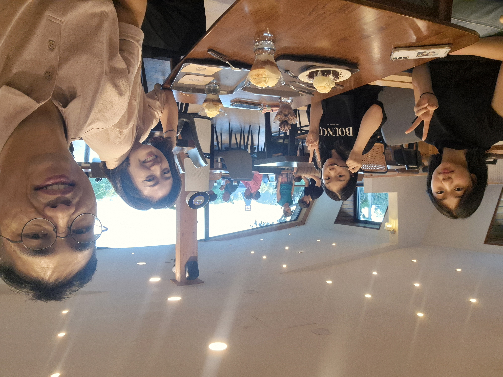
2026년
“우리는 한국으로 가는 선교사다.”
하나님이 우리 가족을 한국으로 보내신다고 믿었습니다.
나는 일터에서, 아내는 학교에서
하나님이 주신 자리에서 살아가기로 했습니다.
BONN 다음에는 벨기에의 로봇 스타트업 Pick-it에서 정말 좋아하는 일을 하게 됐습니다. 그런데 가족 비자가 꼬이면서 결국 한국으로 돌아와야 하는 상황이 됐어요. 저는 유럽에서 7년이나 살았고 아이들도 거기서 태어나 자랐기 때문에 정말 돌아오기 싫었습니다. 심지어 가족 비행기표 살 돈도 넉넉하지 않았어요. 그런데 기도하던 중 Pick-it에서 오히려 저에게 한국 진출을 맡아달라고 제안했고, 가족의 귀국과 정착까지 지원해줬습니다. 겉으로는 비자 때문에 돌아오는 길이었지만, 저희는 ‘하나님이 우리를 한국으로 보내시는구나’라고 받아들였습니다. 2018년의 우리 가족과 지금의 우리 가족을 보면, 저도 하나님이 제 삶을 제가 생각한 것보다 훨씬 다른 길로 이끌어오셨다는 생각이 듭니다.
24/ 26
v9.0 새로운 방향
달라진 나
예전의 나
지금의 나
“남보다 잘해야 해”
→
“함께 잘되는 게 좋아”
“강해 보여야 해”
→
“약한 모습도 괜찮아”
“내가 해내야 해”
→
“하나님께 맡겨도 돼”
“나는 이런 사람이야”
→
“나는 아직 만들어지고 있는 사람이야”
그리고 내 삶의 질문도 바뀌었습니다.
“나는 어떻게 하면 더 잘될까?”→“하나님은 나를 어디에 사용하고 싶으실까?”
돌아보면 저는 꽤 많이 달라졌습니다. 예전에는 남보다 잘해야 했고, 강해 보여야 했고, 결국은 내가 해내야 한다고 생각했어요. 지금은 함께 잘되는 게 더 좋고, 약한 모습도 받아들이려고 하고, 제가 할 수 없는 건 하나님께 맡기는 걸 조금씩 배우고 있습니다. 그리고 제 삶의 질문도 바뀌었어요. 예전에는 ‘나는 어떻게 하면 더 잘될까?’가 중요했다면, 지금은 ‘하나님은 나를 어디에 사용하고 싶으실까?’를 더 많이 묻게 됩니다.
25/ 26
v9.1 업데이트 중
지금의 너로 너의 미래를 너무 빨리 결정하지 마.
너에게 아직 발견되지 않은 재능도 있고, 실패가 다른 길의 시작이 될 수도 있고, 네가 보지 못하는 다음 장을 하나님은 보고 계실 수 있습니다.
“너희 안에서 착한 일을 시작하신 이가 그리스도 예수의 날까지 이루실 줄을 우리는 확신하노라.”빌립보서 1:6
마지막으로 여러분에게 꼭 말하고 싶은 게 있습니다. ‘나는 운동 못해’, ‘나는 공부 못해’, ‘나는 소심해’, ‘나는 문제아야’, ‘나는 꿈이 없어’라고 지금의 모습만 보고 자기 미래를 너무 빨리 결정하지 않았으면 좋겠습니다. 저도 제가 운동을 좋아하게 될 줄, 하나님을 믿게 될 줄, 로봇 AI를 하게 될 줄, 지금 이런 자리에서 여러분에게 제 이야기를 하게 될 줄 몰랐습니다. 실패가 다른 길의 시작이 될 수도 있고, 여러분이 아직 발견하지 못한 재능도 있습니다. 저는 빌립보서 1장 6절 말씀처럼 하나님이 제 안에서 시작하신 일을 계속 이루어가신다고 믿습니다. 하나님은 아직도 저를 제가 상상했던 것보다 더 좋은 모습으로 만들어가고 계십니다. 그리고 여러분도 그렇습니다.